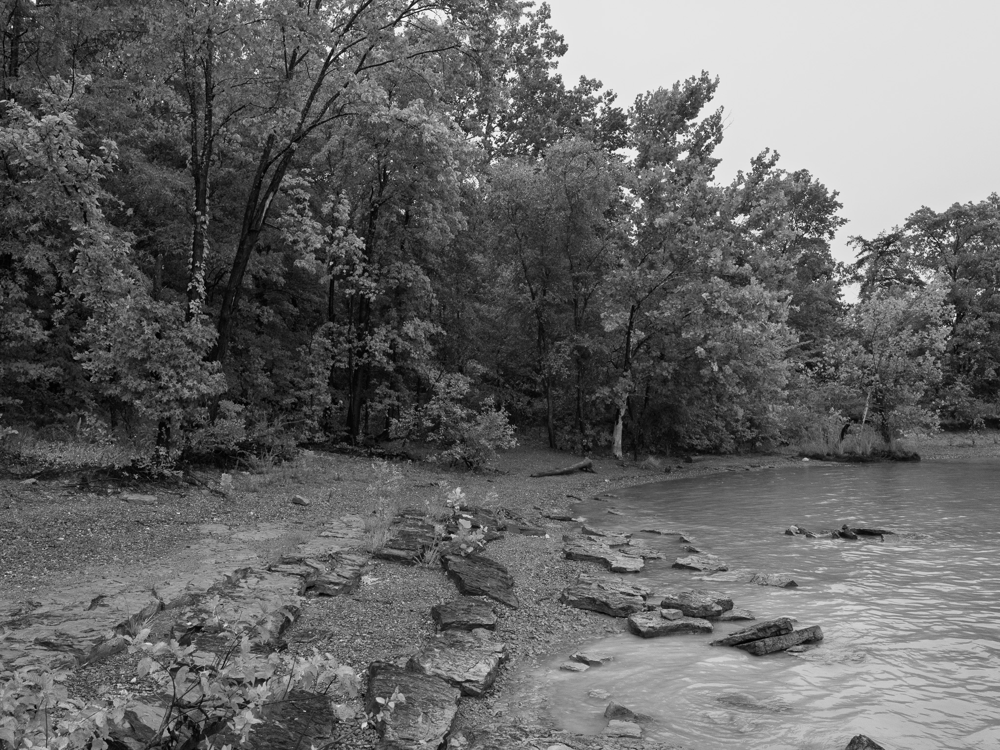
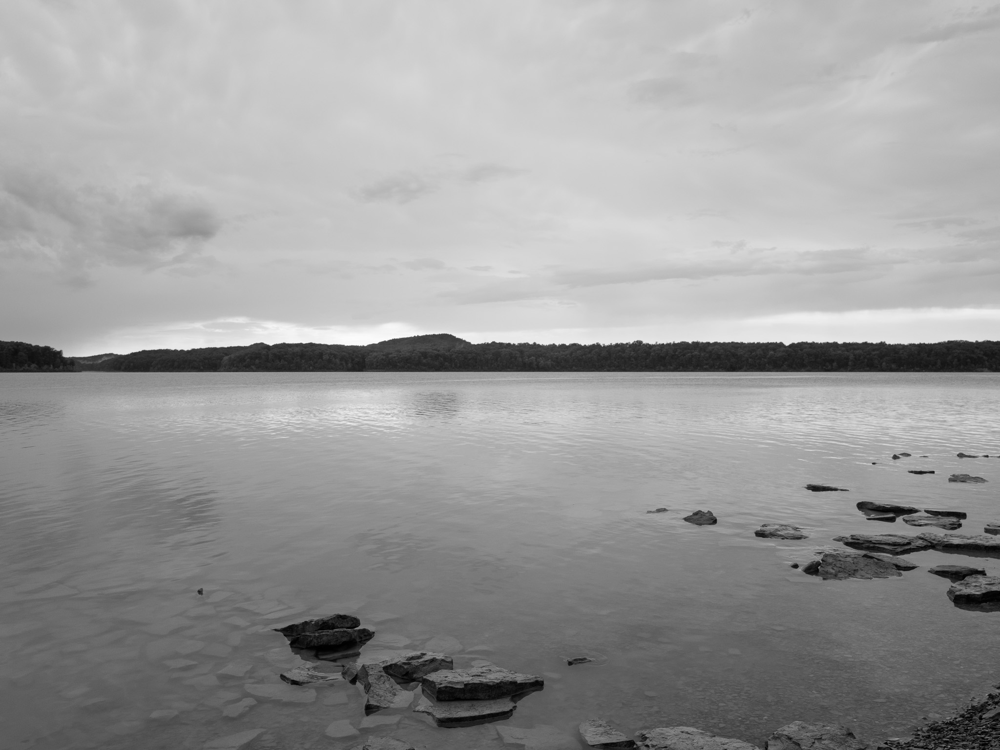
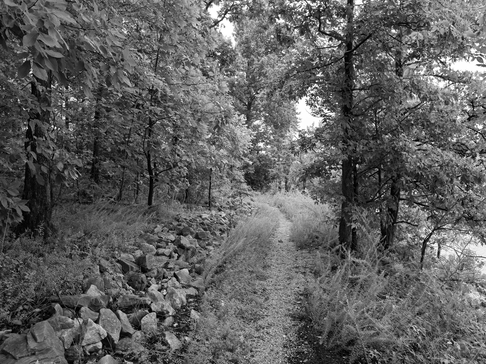
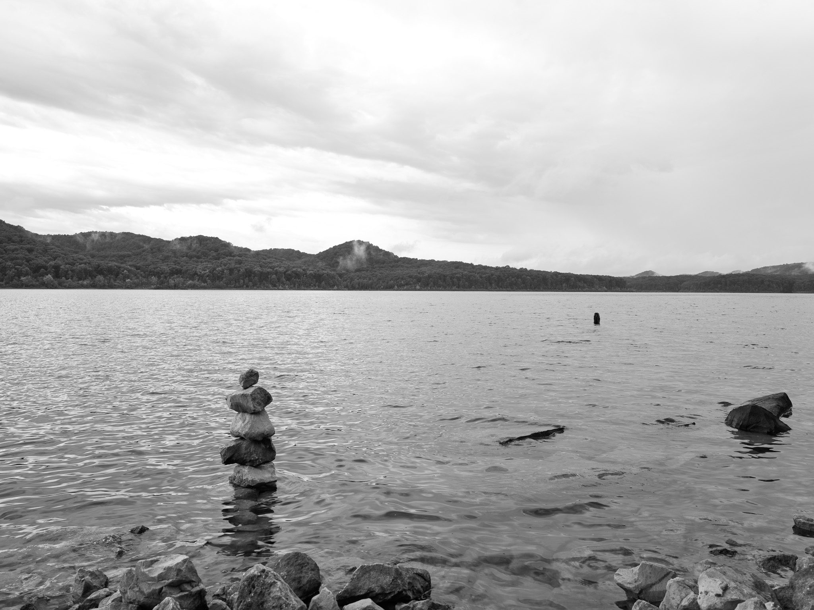
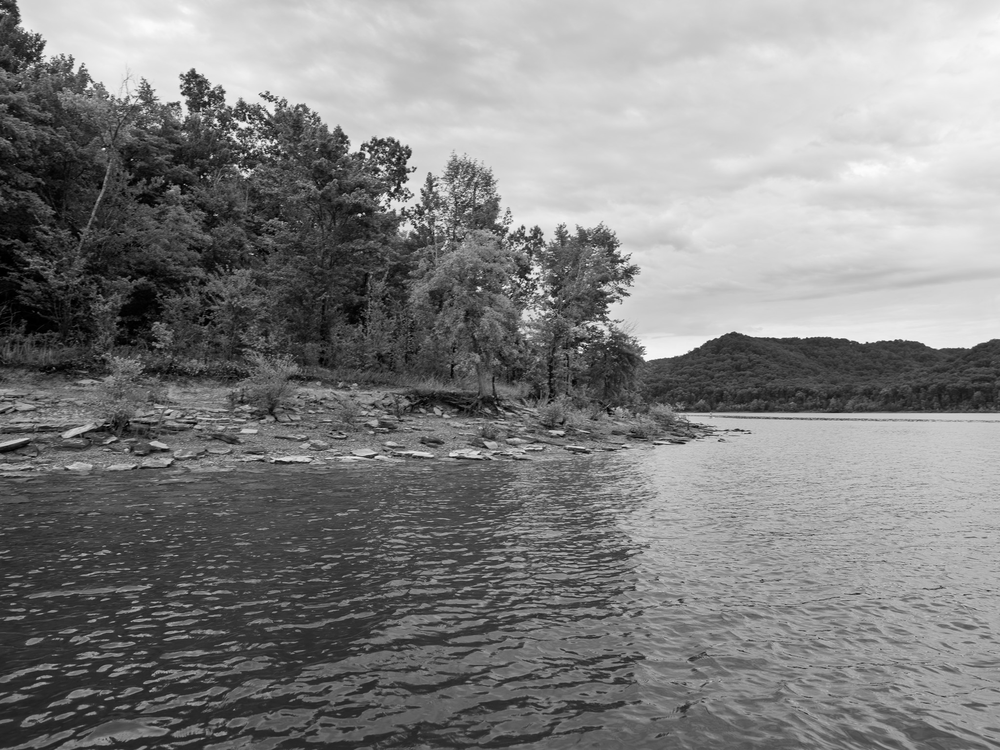
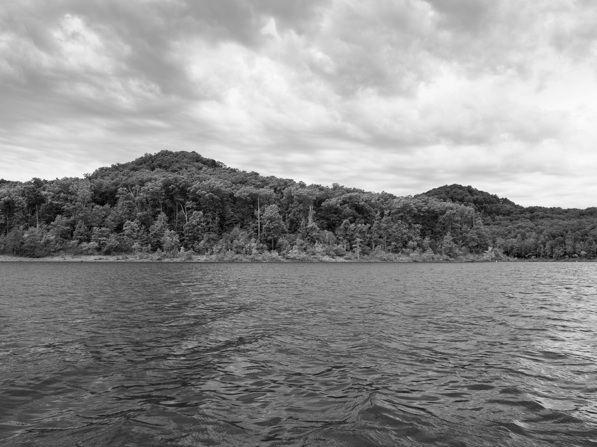

Public Lands Institute
Map
Images
Archive
About
Cave Run Lake
KY

Cave Run Lake 1 · 2026-08-11
_DSF4211.jpg

Cave Run Lake 2 · 2026-08-11
_DSF4216.jpg

Cave Run Lake 3 · 2026-08-12
_DSF4227.jpg

Cave Run Lake 4 · 2026-08-12
_DSF4232.jpg

Cave Run Lake 5 · 2026-08-12
_DSF4251.jpg

Cave Run Lake 6 · 2026-08-12
_DSF4261.jpg
View all 6 images →
← Versailles State Park
Silver Lake State Park →